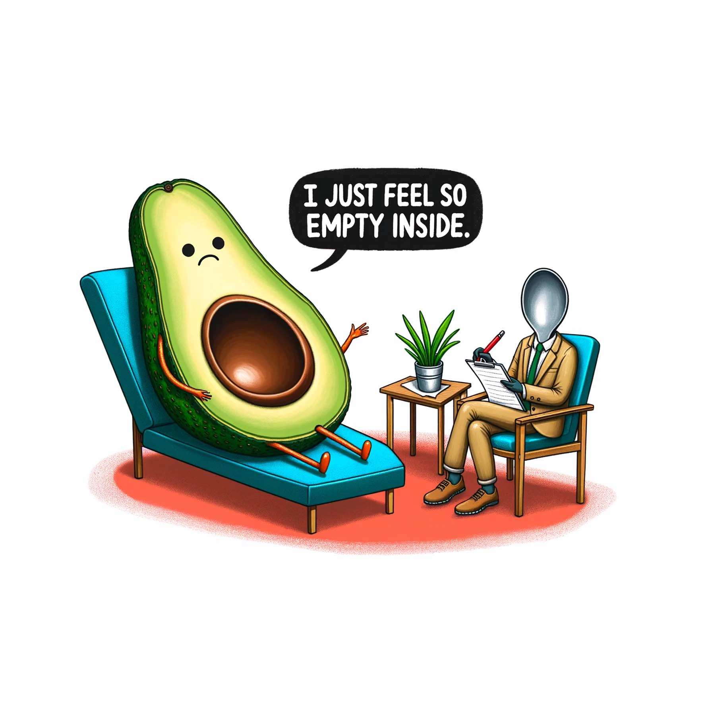

Table of contents |
|---|
| Abstract |
| Introduction |
| Analysis and discussion |
| References |
| Presentation |
Artificial intelligence (AI) will greatly impact higher education as cited in a literature review by Bearman et al. (2023, pp.370-371). It will be beneficial for learning, idea generation and organisation during the degree. However, there are drawbacks of using AI, such as reducing critical thinking, which raises the question of whether it should be used.
Artificial Intelligence (AI) is technology that enables computers and machines to simulate human learning, comprehension, problem solving, decision making, creativity and autonomy (ibm.com, 2024). For example, a chatbot called ChatGPT.
ChatGPT is a chatbot that uses natural language processing (Hetler, 2024, para.1). Natural language processing is a type of artificial intelligence that allows users to talk with a bot in a human-like manner.
ChatGPT can be beneficial for learning new information. For example, it could be used to create programming exercises and can help to explain how to create code as shown by Krusche et al.’s article (2023). This is beneficial for people who are unable to afford expensive online courses and resources which may increase accessibility to information. Additionally, it can generate high-quality questions and improve higher education materials – thus benefitting lecturers and students. However, it’s use is limited as AI is not catered to course-specific curriculums.
Artificial intelligence can also help make information more accessible for disabled students. It does this by the way it delivers information. For example, otter.ai is a software that uses AI to convert audio into words. This is helpful for deaf students as it means they can translate university lectures into notes and be able to read them. Another software which increases accessibility is Grammarly, which can help students with conditions such as dyslexia, by improving their structure in their essays and correct grammar mistakes. These softwares can also benefit non-disabled students. However, a drawback to this is that it may mean that students will not improve on their writing style and will rely on AI.
ChatGPT can also help with university assignments by assisting in understanding what the assignment is asking for. However, sometimes students misuse ChatGPT and use it to fully write their assignment or they may use ideas from ChatGPT to cheat as found by Baidoo-Anu (2024) and change it without proper referencing. ChatGPT can sometimes put incorrect references or make them up which can lead to a loss of information. This can lead to copyright issues and means that people are not fully credited.
ChatGPT offers multilingual support, as found by Chan and Colloton (2024, p.53), which means that students from universities in low-income countries are not excluded from using it and people from most countries are able to access AI. However, this can lead to over-reliance as found by Chan and Colloton (2024, p.56), which reduces independent critical thinking. Furthermore, it can have incorrect information as cited by Saùde et al. (2024, p.9) which can have the opposite effect of helping students across the world – it will hinder them.
University work has been impacted by AI such as ChatGPT. For example, students’ arguments have become narrower as they use ChatGPT, as ChatGPT is based on past data, reducing quality and creativity (Chan and Colloton (2024, p.56)). Universities are also finding it more difficult to accurately test a student’s abilities due to AI doing most of the work. Students could change the wording using ai and then avoid plagiarism checkers (Fowler, 2023). A solution to this, perhaps, is for universities to publish specific guidance on when and how to use AI in university as found by Saùde et al. (2024, pp.7-8). Additionally, students who have not used AI may be unfairly penalised for using ChatGPT and other softwares, resulting in academic misconduct hearings (Fowler, 2023). This can even affect autistic students, whose work has been flagged as plagiarised due to their robotic manner of writing (Davalos, 2024, para.4).
ChatGPT can be used in a broad range of subjects in university. For example, ChatGPT can be used to generate code for many different languages such as HTML, CSS and Python (which is beneficial for computing and engineering students). It can be an aid in the learning process and produce code with personalised explanations (Chakraborty et al. (2023, pp.200-201)). ChatGPT can find, fix, debug code and create algorithms as found by Chakraborty et al.(2023, pp.101-103), which can streamline the process for students. However, ChatGPT is limited as it is outdated because it uses training from 2022 and publicises information that is fed, creating privacy issues as found by Romera et al. (2024, p.7) . It is still new so needs more development and code may be outdated. Additionally, when there are blanks ChatGPT fills them with random words which produces incorrect code as found by Chakraborty et al. (2023, p.200). This means it may not be reliable to use in the learning process.
Another example is DALL-E 3, which can be used in art, to allow you to translate your ideas into accurate images (OpenAi, 2024). Art students can use image generation AIs, such as DALL-E 3 (Chan and Colloton - (2024, p.40)), to generate images for paintings and sculptures, (Chan and Colloton - (2024, p.40))and then use those ideas in their work. But this can decrease the originality of artwork as students may be tempted to copy and also lead to plagiarism, as DALLE can copy art from people who have not given permission.
Below is art created by DALL-E 3:
Avocado, (ChatGPT, 2024)
Plategirl, (ChatGPT, 2024)
In conclusion, AI should be used in university because of its benefits. It helps a range of students such as disabled students, low-income students and struggling students. It should not be feared as it increases efficiency and saves time. The drawbacks can be addressed by new policies and guidance for students as found by Saùde et al.((2024, pp. 7-8).)
Baidoo-Anu, D. (2024) 'Exploring student perspectives on generative artificial intelligence in higher education learning', Discover education 3, 98, P.3 Available at: 10.1007/s44217-024-00173-z (This is peer reviewed)
Bearman, M et al. (2023). ‘Discourses of artificial intelligence in higher education: a critical literature review’, High Educ, 86, pp. 370-371, https://link.springer.com/article/10.1007/s10734-022-00937-2#citeas (Accessed: 04/12/2024). (This is Peer reviewed)
Chakraborty, U et al. (2023) Rise of generative AI and chatgpt: understand how generative AI and chatgpt are transforming and reshaping the business world. London, England: BPB Online.
Chan C. and Colloton T. (2024) Generative AI in higher education the chatgpt effect. London: Taylor and Francis.
ChatGPT (2024) Avocado [Digital art]. Available at: https://openai.com/index/dall-e-3/ (Accessed: 04/12/24).
ChatGPT (2024) Plategirl [Digital art]. Available at: https://openai.com/index/dall-e-3/ (Accessed: 04/12/24).
Davalos J, et al. (2024) Bloomberg law. Available at: https://news.bloomberglaw.com/product/blaw/bloomberglawnews/exp/eyJpZCI6IjAwMDAwMTkyLWEwMmEtZGZjOS1hNWQ3LWFmNmZhYjc1MDAwNCIsImN0eHQiOiJQRU5XIiwidXVpZCI6IkkrOEd5Q1N0d0hyU3UrSnJUcDlIcWc9PVkrbUQ2N3VuOUpXc0ZUWEprZU1kdEE9PSIsInRpbWUiOiIxNzI5Mjc1MTE1OTkwIiwic2lnIjoiK2ZEemdtWEZqbWRtMHFJaXh6eW1wS0Y1eXNzPSIsInYiOiIxIn0=?source=newsletter&item=read-text®ion=digest&channel=bloomberg-law-news (Accessed: 04/12/24).
Fowler, G. (2023) Washington post. Available at: https://www.washingtonpost.com/technology/2023/04/01/chatgpt-cheating-detection-turnitin/ (Accessed: 04/12/24).
Hetler, A. (2024) What is ChatGPT? Available at: https://www.techtarget.com/whatis/definition/ChatGPT (Accessed: 04/12/24).
Ibm.com (2024) Available at: https://www.ibm.com/topics/artificial-intelligence (Accessed: 04/12/24)
Krusche, S et al.(2023) ‘Recommendations to Create Programming Exercises to Overcome ChatGPT, ‘Recommendations to Create Programming Exercises to Overcome ChatGPT’, 2023 IEEE 35th International, pp.1-2. Available at: 10.1109/CSEET58097.2023.00031
OpenAi (2024) Research DALLE.3. Available at: https://openai.com/index/dall-e-3/ (Accessed: 04/12/2024).
Romero, M et al. (2024) Generative Artificial Intelligence in Higher Education. Switzerland: Palgrave Macmillan.
Saúde, S et al. (2024) 'Impacts of generative artificial intelligence in higher education: research trends and students' perceptions', Social Sciences (Basel), Vol 13 (8), pp. 7-9. Available at: https://surrey.primo.exlibrisgroup.com/permalink/44SUR_INST/1tc3s1n/cdi_doaj_primary_oai_doaj_org_article_d7384eb04fec404590af0d046e740fe9 URL (Accessed: 04/12/2024). (This is Peer reviewed)